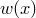
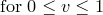
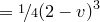
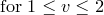
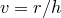
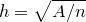
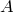
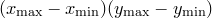
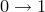

interpolate ( akima | linear | loglinear | polynomial |
spline | stepwise |
2d [( bmp_r | bmp_g | bmp_b )] )
[<range specification>] <function name>"()"
'<filename>'
[ every <expression> {:<expression} ]
[ index <value> ]
[ select <expression> ]
[ using <expression> {:<expression} ]
The interpolate command can be used to generate a special function within PyXPlot’s mathematical environment which interpolates a set of datapoints supplied from a datafile. Either one- or two-dimensional interpolation is possible.
In the case of one-dimensional interpolation, various different types of interpolation are supported: linear interpolation, power law interpolation, polynomial interpolation, cubic spline interpolation and akima spline interpolation. Stepwise interpolation returns the value of the datapoint nearest to the requested point in argument space. The use of polynomial interpolation with large datasets is strongly discouraged, as polynomial fits tend to show severe oscillations between datapoints. Except in the case of stepwise interpolation, extrapolation is not permitted; if an attempt is made to evaluate an interpolated function beyond the limits of the datapoints which it interpolates, PyXPlot returns an error or value of not-a-number.
In the case of two-dimensional interpolation, the type of interpolation to be used is set using the interpolate modifier to the set samples command, and may be changed at any time after the interpolation function has been created. The options available are nearest neighbour interpolation – which is the two-dimensional equivalent of stepwise interpolation, inverse square interpolation – which returns a weighted average of the supplied datapoints, using the inverse squares of their distances from the requested point in argument space as weights, and Monaghan Lattanzio interpolation, which uses the weighting function (Monaghan & Lattanzio 1985)
|  |  |
 | |||
 |
 |  |
where  for ,  is the product  and  is the number of input datapoints. These are selected as follows:
is the number of input datapoints. These are selected as follows:
set samples interpolate NearestNeighbour set samples interpolate InverseSquare set samples interpolate MonaghanLattanzio
Finally, data can be imported from graphical images in bitmap (.bmp) format to produce a function of two arguments returning a value in the range  which represents the data in one of the image’s three colour channels. The two arguments are the horizontal and vertical position within the bitmap image, as measured in pixels.
A very common application of the interpolate command is to perform arithmetic functions such as addition or subtraction on datasets which are not sampled at the same abscissa values. The following example would plot the difference between two such datasets:
interpolate linear f() 'data1.dat' interpolate linear g() 'data2.dat' plot [min:max] f(x)-g(x)
Note that it is advisable to supply a range to the plot command in this example: because the two datasets have been turned into continuous functions, the plot command has to guess a range over which to plot them unless one is explicitly supplied.
The spline command is an alias for interpolate spline; the following two statements are equivalent:
spline f() 'data1.dat' interpolate spline f() 'data1.dat'